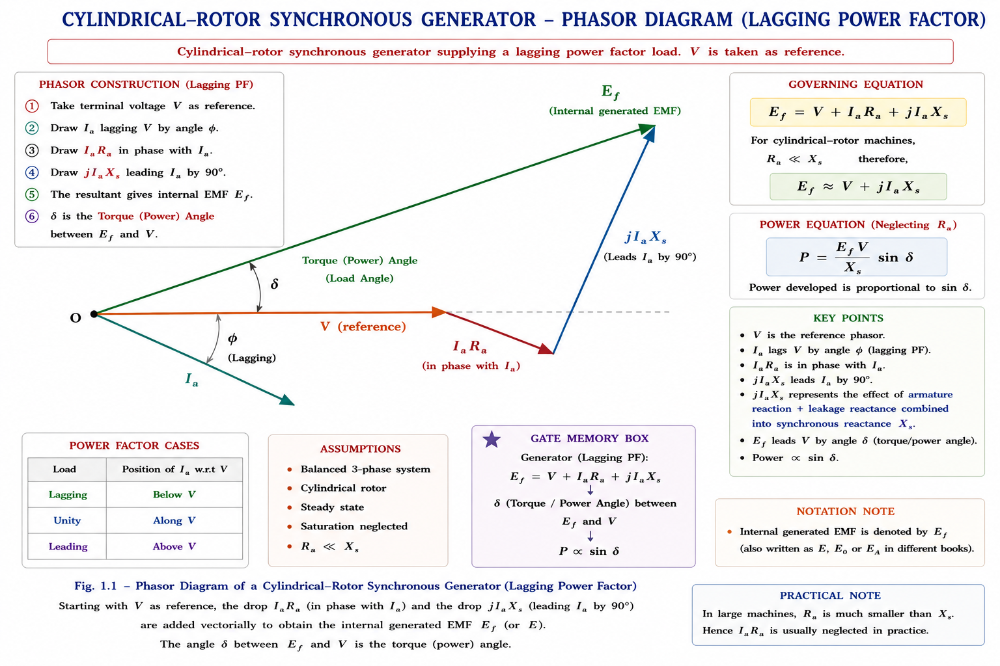
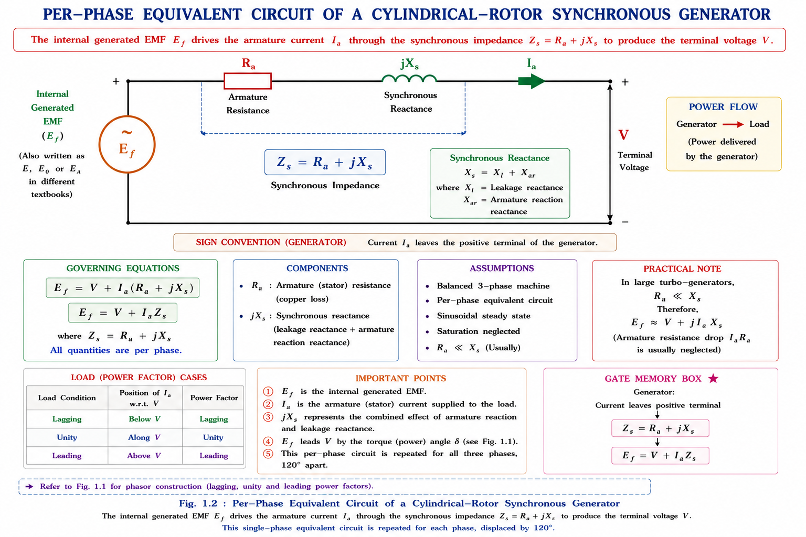
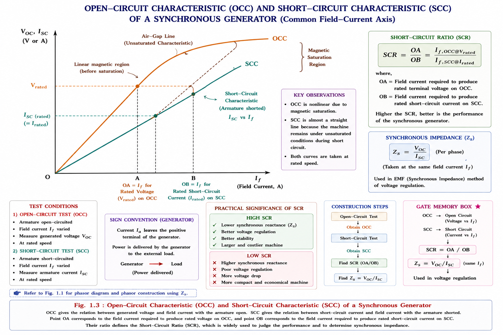
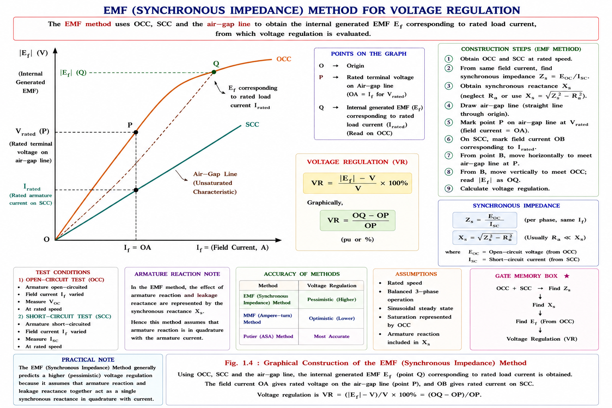
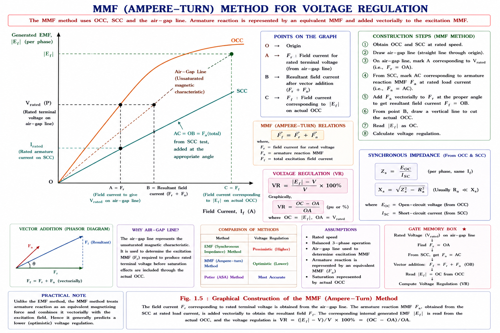
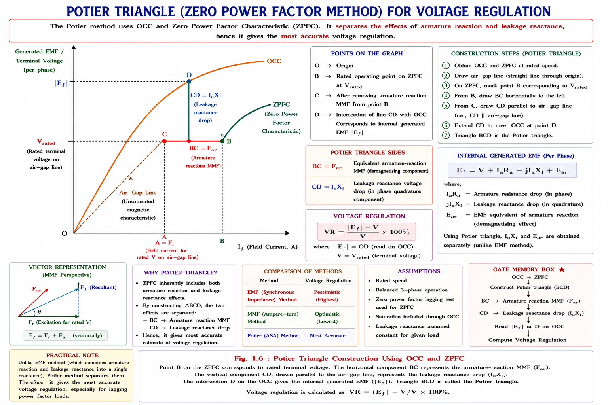
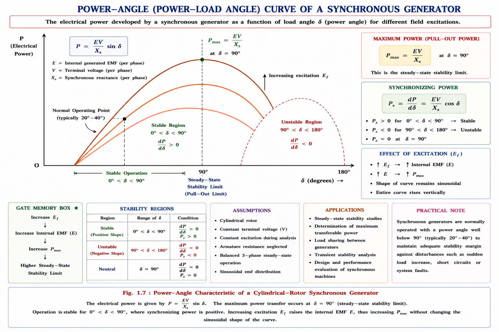
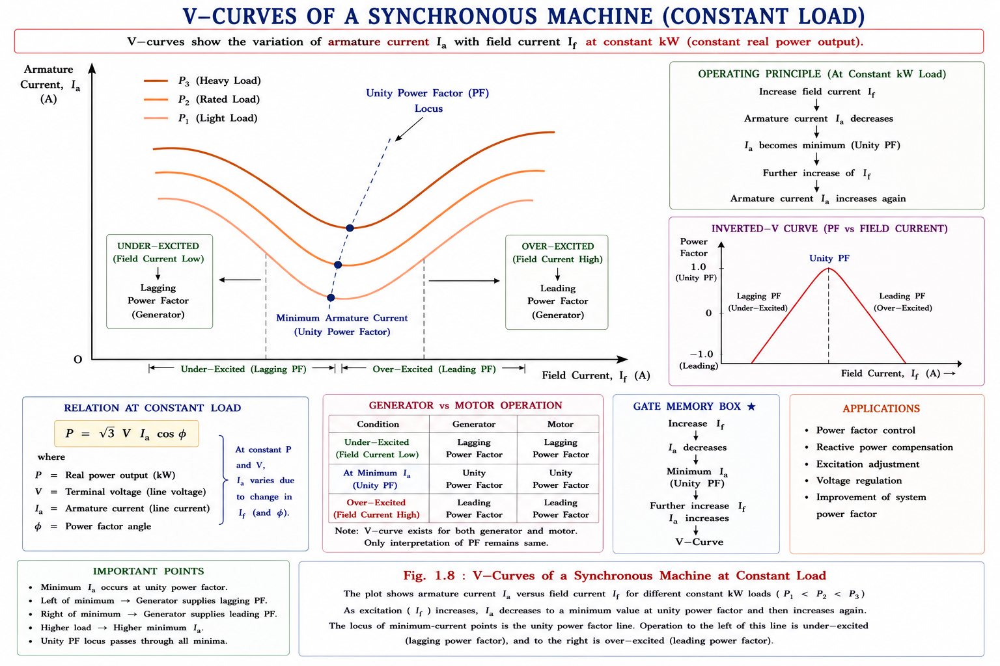

Cylindrical rotor phasor diagram, armature reaction, equivalent circuit, OC & SC tests, short circuit ratio, voltage regulation by EMF / MMF / ZPF (Potier) / ASA methods, power-angle relations, reactive power exchange, and V-curves — complete GATE, IES and PSU exam coverage with full derivations and solved numericals.
Almost every unit of electrical energy that reaches a socket in India — or anywhere in the world — begins its life inside a synchronous generator (alternator). A steam, gas, hydro, or nuclear turbine spins the rotor at synchronous speed, a DC field current on the rotor creates a rotating magnetic field, and this field sweeps past stationary armature conductors to induce a three-phase EMF. Every large thermal and nuclear plant in the country uses a cylindrical (non-salient / round) rotor machine, because at 3000 rpm (2-pole, 50 Hz) or 1500 rpm (4-pole) the rotor must be mechanically robust against enormous centrifugal stress — a shape only a smooth cylindrical forging can survive.
A salient-pole rotor (used in low-speed hydro generators) has "poles sticking out" and would fly apart under the centrifugal force of a 3000 rpm turbo-generator. The cylindrical rotor solves this by embedding field windings in slots machined into a solid steel forging — the surface stays smooth, and the air-gap is uniform all around. A uniform air-gap is exactly what makes the mathematics of this chapter possible: a single reactance describes the entire machine.
The entire goal of this chapter is to build one clean electrical model of the cylindrical-rotor generator — an EMF source in series with a single synchronous impedance — and then use that model to answer the three questions every exam (and every plant engineer) actually cares about: (1) how much does the terminal voltage sag from no-load to full-load (voltage regulation), (2) how much real and reactive power can the machine deliver before it loses synchronism (power-angle relation), and (3) how does changing the field current change the power factor at which the machine operates (V-curves).
When the armature carries load current Ia, that current sets up its own rotating magnetic field — the armature reaction field — which interacts with the main rotor field. In a cylindrical rotor machine the air-gap is uniform, so this interaction can be represented purely as a voltage drop, jIaXar, in series with the winding. Add the ordinary leakage-reactance drop jIaXl and the resistive drop IaRa, and the whole machine reduces to a single equivalent circuit.
\( \vec{E_f} = \vec{V} + \vec{I_a}\,Z_s \), where \( Z_s = R_a + jX_s \). Every voltage regulation method, every power-angle formula, and every V-curve in this chapter is derived from this single phasor equation applied at different operating conditions.

Some textbooks split \(X_s\) into its two physical components explicitly — useful for understanding why \(X_s\) exists, even though exam problems almost always use the combined \(X_s\) directly.
| Symbol | Name | Physical Meaning |
|---|---|---|
| \(E_f\) | Excitation / no-load EMF | EMF induced by the DC field flux alone (OC voltage at that field current) |
| \(E_r\) | Resultant air-gap EMF | EMF due to the net air-gap flux (main flux + armature-reaction flux) |
| \(X_l\) | Armature leakage reactance | Accounts for flux that links the armature winding but not the air-gap / field |
| \(X_{ar}\) | Armature-reaction reactance | Fictitious reactance representing the demagnetising / magnetising effect of \(I_a\) on the main field, expressed as a voltage drop |
| \(X_s = X_l + X_{ar}\) | Synchronous reactance | Single reactance combining both effects — used in nearly all problem-solving |
Armature reaction is not a real physical winding drop like I_aR_a — it is a mathematical device to represent the demagnetising/cross-magnetising effect of the armature MMF as an equivalent reactance drop, valid only because the cylindrical air-gap is uniform. In salient-pole machines the same trick fails, and a two-axis (X_d, X_q) model is required instead.
The per-phase equivalent circuit of a cylindrical-rotor synchronous generator is simply the phasor equation of Section 1.2 drawn as a circuit: an ideal AC source E_f (representing the rotating field flux) feeding the terminal through the synchronous impedance Z_s = R_a + jX_s.

The two angles are numerically close and often used loosely as synonyms in problem-solving, but conceptually the torque angle belongs to the magnetic circuit (flux/MMF) picture while the power angle belongs to the electrical (phasor) picture used for power calculations.
Directly measuring R_a is easy (a simple resistance test), but X_s cannot be measured directly because it depends on the degree of magnetic saturation, which itself depends on the field current. Two simple no-load tests solve this problem completely.

The modified air-gap line is the OCC of an equivalent unsaturated machine that gives rated voltage at the same field current as the real (saturated) machine. Using this line — rather than the curved OCC — to read off V_rated keeps the saturated synchronous reactance calculation consistent and is the standard convention.
The Short-Circuit Ratio is a single number, derivable straight from Fig 1.3, that tells a designer or examiner a great deal about a machine's stability, size, and cost — without needing any other data.
| SCR Value | Machine Type | Practical Implication |
|---|---|---|
| Low SCR (≈ 0.35–0.6) | Turbo-alternator (cylindrical rotor) | Small air-gap, high X_s(pu), cheaper & lighter, but lower steady-state stability limit and larger voltage change on load |
| High SCR (≈ 1.0–1.5) | Salient-pole (hydro) generator | Large air-gap, low X_s(pu), bulkier & costlier, but better stability and voltage regulation |
For a turbo-generator: SCR ≥ 0.58 is generally used, and per IEEE guidance it should not fall below about 0.35. For a salient-pole generator, the client typically specifies SCR not less than 0.8. A low SCR means a machine is more sensitive to load changes — voltage regulation worsens and stability margin shrinks — because SCR is the reciprocal of per-unit synchronous reactance.
Voltage regulation (VR) answers a very practical question: if a generator is delivering rated voltage V at a specified load and power factor, and that load is suddenly thrown off — keeping the field current (excitation) fixed — how much does the terminal voltage rise?
Three classical methods exist to estimate E_f — and hence VR — from OC and SC test data alone (i.e. without ever loading the machine at rated current, which is often impractical for large generators): the EMF method, the MMF (ampere-turn) method, and the ZPF (Potier) method. They differ only in exactly where the saturation correction is applied, and consequently give three different answers for the same machine.
The EMF method (also called the synchronous impedance method) uses the single lumped X_s(sat) found in Section 1.4 and simply computes E_f from the phasor equation of Section 1.2.

Because the single X_s(sat) used here is derived assuming the machine behaves consistently saturated at the SC-test operating point, the EMF method tends to over-estimate the actual voltage regulation compared to a real loaded test. For this reason it is called the pessimistic method — it always gives a value on the higher (safer, but less accurate) side.
The MMF method works entirely in the field-current (MMF) domain instead of the voltage domain. Rather than converting the reactance drop into an equivalent field current, it adds field currents directly — the field current needed to overcome armature-reaction demagnetisation is added to the field current needed to balance leakage-reactance drop and R_a, then this total field current is read directly off the OCC (not the air-gap line) to obtain E_f.

Because E_f is read directly off the real, saturated OCC (rather than combined via an idealised reactance), the MMF method tends to under-estimate voltage regulation compared to reality. It is therefore called the optimistic method — the mirror image of the EMF method's pessimism.
| Method | Domain | Tendency | Accuracy |
|---|---|---|---|
| EMF Method | Voltage (reactance drop) | Pessimistic (VR too high) | Low |
| MMF Method | Field current (MMF) | Optimistic (VR too low) | Low |
| ZPF (Potier) Method | Mixed — treats quantities as they exist on load | Most realistic | High |
The zero power factor (ZPF) test, also called the Potier test, directly measures how terminal voltage varies with field current while the armature carries rated current at zero (lagging) power factor — obtained practically by loading the machine with a synchronous motor running heavily under-excited, or a reactor bank. Because this test reproduces the actual demagnetising condition the machine experiences on load, it is the most physically realistic of the three methods.

The Potier / ZPF method was, for decades, the standard recommended procedure — but it requires a dedicated ZPF load test which is not always convenient. The ASA method modifies the simpler MMF method by determining F_r(final) from the air-gap line (as before) but adding an extra correction: the additional field MMF needed to overcome saturation, found as the horizontal gap between the air-gap line and the OCC at the E_r voltage level (using the Potier triangle's I_aX_l to fix E_r). This additional saturation MMF is added to the unsaturated F_f to get the actual field MMF of the loaded machine.
1 pu field current in a synchronous machine is defined as the field current that gives rated voltage on the air-gap line (not the OCC). This precise definition is exactly what makes the ASA correction procedure well-defined and repeatable.
EMF method → pessimistic (VR too high). MMF method → optimistic (VR too low). ZPF / Potier method → treats quantities as they actually exist under load, so it is the most realistic. The ASA method — the modern refinement of the MMF method — is the officially recommended method for both cylindrical-rotor and salient-pole machines today.
The single phasor equation E_f = V + I_aZ_s also determines how much real power the machine can transfer between the shaft and the electrical bus, as a function of the load angle δ between E_f and V. This is arguably the single most important relation in synchronous machine theory — it underlies everything from steady-state stability limits to transient stability studies to power system dynamic simulations.
Since \(R_a \ll X_s\) in large machines, setting \(R_a = 0\) gives \(Z_s = X_s\) and \(\theta_s = 90^\circ\), collapsing the power-angle relation to the clean, universally quoted form used in stability studies.

When armature resistance is neglected the steady-state stability limit (δ = 90°) coincides for both generator and motor action; in a real machine with finite R_a the maximum-power angle shifts slightly to δ = θ_s, and for the motor case the corresponding condition works out to δ = θ_s as well, derived from the same phasor algebra applied with reversed power flow.
At constant real power output (constant shaft torque for a generator, or constant kW load for a motor), changing the field current I_f changes only the power factor at which the machine operates — it does not change P. This is because P = (VE_f/X_s) sin δ = constant forces E_f sin δ to stay constant, so E_f and δ must move together while E_f cos δ (which sets Q) is free to vary.
| Machine | Excitation Condition | Reactive Power | Operating PF |
|---|---|---|---|
| Generator | Normally excited — \(E_f \cos \delta = V\) | \(Q_{out} = 0\) | Unity PF |
| Over-excited — \(E_f \cos \delta > V\) | \(Q_{out} = \text{+ve}\) (supplies lagging VARs) | Lagging PF | |
| Under-excited — \(E_f \cos \delta < V\) | \(Q_{out} = \text{−ve}\) (supplies leading VARs) | Leading PF | |
| Motor | Normally excited — \(E_f \cos \delta = V\) | \(Q_{in} = 0\) | Unity PF |
| Over-excited — \(E_f \cos \delta > V\) | \(Q_{in} = \text{−ve}\) (draws leading VARs) | Leading PF | |
| Under-excited — \(E_f \cos \delta < V\) | \(Q_{in} = \text{+ve}\) (draws lagging VARs) | Lagging PF |
An over-excited synchronous generator supplies lagging VARs to the system — exactly the same behaviour as an over-excited synchronous motor, which instead draws leading VARs. This dual behaviour is why over-excited synchronous motors (running as "synchronous condensers") are deliberately installed on power systems for reactive power compensation and power-factor correction.
Plotting armature current I_a against field current I_f, at several fixed levels of real power (kW output), produces a family of curves shaped like the letter V — hence the name. Each curve has a minimum at unity power factor (where I_a is purely real, hence minimum in magnitude for that P), with lagging PF operation to the left (under-excited) and leading PF to the right (over-excited) for a generator — with the labelling reversed for a motor.

A closely related plot — the compounding curve — instead holds power factor constant and plots the field current I_f needed to hold terminal voltage constant as I_a (the load) is varied. At lagging PF, I_f must rise noticeably with load (demagnetising armature reaction must be overcome); at leading PF, I_f can actually fall with increasing load (magnetising armature reaction assists the field).
Given: \(V_L = 6.6 \text{ kV} \rightarrow V_{phase} = 6600/\sqrt{3} = 3810.5 \text{ V}\); \(I_{a(rated)} = 437 \text{ A}\); \(I_{sc} = 437 \text{ A}\) at the same \(I_f\); \(R_a = 0.4 \;\Omega\)/phase
Step 1 — Synchronous impedance and reactance:
Step 2 — Phasor addition at 0.8 pf lagging (I_a = 437∠−36.87°, V = 3810.5∠0°):
Step 3 — Voltage regulation:
This machine has X_s(pu) = X_s(sat)/Z_base = 8.71/8.72 ≈ 1.0 pu — a typical unsaturated synchronous reactance for a turbo-alternator. Combined with lagging pf, the EMF method's pessimistic bias produces a large VR. Real on-load VR (via ZPF method) would be noticeably lower.
Step 1 — SCR:
Step 2 — Per-unit synchronous reactance:
Step 3 — Actual ohmic value (rated current = 10×10⁶/(√3×11000) = 524.9 A, Z_base = V_phase/I_rated = 6350.6/524.9 = 12.1 Ω):
SCR = 0.625 is above the turbo-alternator minimum of 0.58 but well below the ≥ 0.8 typically specified for salient-pole (hydro) machines — so this machine is almost certainly a turbo-alternator (cylindrical rotor), consistent with a relatively high X_s(pu) = 1.6.
(a) Power at δ = 20° — per-phase, then × 3:
(b) Maximum power — occurs at δ = 90°:
Since the machine is delivering only 1.42 MW at δ = 20° against a maximum capability of 4.16 MW (at δ = 90°), it has a healthy stability margin.
Since E_f cos δ = 3946.7 V > V = 3300 V, the machine is over-excited and supplies lagging VARs (Section 1.10, case ii).
Answer: Over-excited, delivering ≈ 0.64 MVAR lagging in addition to the 1.42 MW real power found in EX 1.3.
These sub-topics recur almost every year across GATE EE and IES E&T:
For a cylindrical-rotor synchronous generator, the voltage regulation calculated by the EMF (synchronous impedance) method, compared to the value obtained by the MMF (ampere-turn) method, is generally:
Explanation: The EMF method is pessimistic (VR too high) because it applies a single saturated reactance uniformly; the MMF method is optimistic (VR too low) because it reads E_f straight off the actual saturated OCC. Hence EMF-method VR > MMF-method VR for the same machine and load.
A synchronous generator with a low short-circuit ratio (SCR) will, compared to a similarly rated machine with high SCR, exhibit which of the following?
1. Larger air-gap | 2. Higher per-unit synchronous reactance | 3. Poorer inherent voltage regulation | 4. Lower steady-state stability limit
Explanation: Low SCR corresponds to a smaller air-gap (statement 1 false), which gives higher X_s(pu) = 1/SCR (statement 2 true), which worsens voltage regulation (statement 3 true) and lowers the steady-state stability power limit P_max = VE_f/X_s (statement 4 true, since larger X_s reduces P_max).
An over-excited synchronous generator connected to an infinite bus, operating at constant real power output, will:
Explanation: Over-excitation means E_f cos δ > V, giving Q_out = (V/X_s)(E_f cos δ − V) > 0 — the generator supplies (positive/lagging) reactive power to the bus. This is the same principle exploited by synchronous condensers for reactive power support.
EMF method → Exaggerates VR (pessimistic, too high). MMF method → Minimises VR (optimistic, too low). The truth (ZPF/Potier) sits between the two, closer to real on-load behaviour.
An OVER-excited generator delivers lagging VARs (both start differently but pair together in memory as the "generous" state — giving out reactive support). An under-excited generator does the opposite — it absorbs VARs from the system.
\(E_f = V + I_a(R_a + jX_s)\). Everything else in this chapter is this one equation applied at different loads and interpreted in different ways.
\(X_{s(sat)} = V_{rated}/I_{sc}\) at the field current giving \(V_{rated}\) on the air-gap line. \(SCR = OA/OB = 1/X_{s(sat,pu)}\). Low SCR → turbo-alternator; high SCR → salient-pole.
EMF method — pessimistic (VR too high). MMF method — optimistic (VR too low). ZPF/Potier method — realistic. ASA method — modern refinement of MMF, officially recommended.
\(P = (VE_f/X_s) \sin \delta\) (\(R_a\) neglected). \(P_{max}\) at \(\delta = 90^\circ\) — the steady-state stability limit. Increasing \(E_f\) raises \(P_{max}\).
Over-excited generator (\(E_f \cos \delta > V\)) → supplies lagging VARs. Under-excited → supplies leading VARs. Motor behaviour is the mirror image.
\(I_a\) vs \(I_f\) at constant kW — minimum \(I_a\) at unity PF. Lagging PF left of minimum (generator), leading PF right. Compounding curves plot \(I_f\) vs \(I_a\) at constant PF instead.
Parallel Operation of Synchronous Generators — synchronizing conditions, synchronizing power and torque coefficients, load sharing between machines on infinite bus, effect of governor and excitation control, and hunting / damper windings.
Have a question on synchronous reactance, voltage regulation methods, power-angle curves, or V-curves? Type below or pick a suggestion.
All technical content is derived from the following standard textbooks and learning resources. All explanations, derivations, diagrams and worked examples are original to Aarova AI.